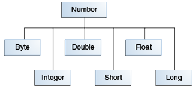

Cuando trabaja con números, la mayoría del tiempo usted usa los tipos primitivos en su código. Por ejemplo:
int i = 500;
float gpa = 3.65f;
byte mascara = 0xff;
Hay, sin embargo, razones para usar objetos en lugar de tipos primitivos, y la plataforma Java ofrece clases envoltorio para cada uno de los tipos de datos primitivos. Estas clases "envuelven" el tipo primitivo en un objeto. A menudo, la envoltura es hecha por el compilador — si usa un tipo primitivo donde se espera un objeto, el compilador "encaja" (box, en inglés) el dato primitivo en su clase envoltorio por usted. De forma similar, si usa un objeto número cuando se espera un dato primitivo, el compilador "desenvuelve" (unbox, en inglés) el objeto por usted. Para más información, vea Autoboxing y Unboxing (Conversiones Automáticas) .
Todas las clases envoltorio numéricas son subclases de la clase abstracta Number

Number que no están descritas aquí.
BigDecimal y BigInteger son usadas para cálculos de alta precisión.
AtomicInteger y AtomicLong son usadas en aplicaciones multi-hilo.
Hay tres razones por las que usaría un objeto Number en vez de un dato primitivos:
MIN_VALUE u MAX_VALUE, que
establecen los límites superiores e inferiores del tipo de dato.
La siguiente tabla lista los métodos de instancia que todas las subclases de la clase Number
implementan.
| Método | Descripción |
|---|---|
byte byteValue()
|
Convierte el valor de este objeto Number a un tipo de dato primitivo devuelto.
|
int compareTo(Byte otroByte)
|
Compara este objeto Number con el argumento.
|
boolean equals(Object obj)
|
Determina si este objeto número es igual al argumento.
Los métodos devuelven true si el argumento no es null y es un objeto del
mismo tipo y con el mismo valor numérico..
Hay algunos requerimientos extra para los objetos Double y Float que son
descritos en la documentación del IPA de Java.
|
Cada clase Number contiene otros métodos que son útiles para convertir número a cadenas y viceversa
y para convertir entre sistemas numéricos. La siguiente tabla lista estos métodos en la clase
Integer. Los métodos para otras subclases Number son similares:
| Método | Descripción |
|---|---|
static Integer decode(String s)
|
Decodifica una cadena a un entero. Puede aceptar represetaciones en cadena de números decimales, octales, o hexadecimales como entrada. |
static int parseInt(String s)
|
Devuelve un entero (sólo en decimal). |
static int parseInt(String s, int radix)
|
Devuelve un entero, dada una representación en cadena de un número decimal, binario, octal, o
hexadecimal (base igual a 10, 2, 8, o 16 respectivamente) como entrada.
|
String toString()
|
Devuelve un objeto String representando el valor de este Integer.
|
static String toString(int i)
|
Devuelve un objeto String representando el entero especificado.
|
static Integer valueOf(int i)
|
Devuelve un objeto Integer conteniendo el valor del dato primitivo especificado.
|
static Integer valueOf(String s)
|
Devuelve un objeto Integer conteniendo el valor de la representación en cadena
especificada.
|
static Integer valueOf(String s, int radix)
|
Devuelve un objeto Integer conteniendo el valor entero de la representación en cadena
especificada, analizada con el valor de la base. Por ejemplo, si s = quot;333", y base = 8, el
método devuelve el entero en base-10 equivalente al número octal 333.
|